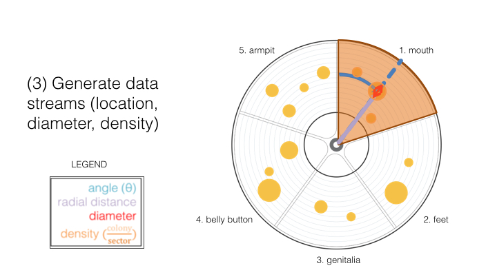

How are your bacteria turned into sound?
1 / 9
Click through the slides below to learn more!
2 / 9
Can hip hop save biotechnology? The Biota Beats system remixes aspects of music, DJ turntablism, and biology to create new and intuitive interactions with microbiota.
3 / 9
A diagram of the Biota Beats setup.

4 / 9
Biota-records were designed after EP and LP vinyls and come in one of two designs: concentric and pie.

5 / 9
Bacterial samples from the human body are swabbed and streaked onto the biota-record.

6 / 9
How does our sonification algorithm work? Step 1: inoculate organisms from the body and capture images.
7 / 9
How does our sonification algorithm work? Step 2: image processing to detect organisms and sectorize by body part.
8 / 9
How does our sonification algorithm work? Step 3: generate data streams (location, diameter, density)

9 / 9
Next steps for Biota Beats: a digital library of biota-records to play and contribute to!